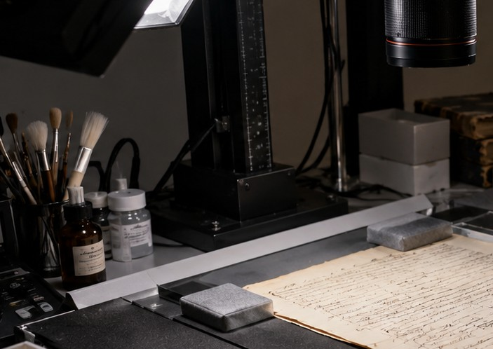
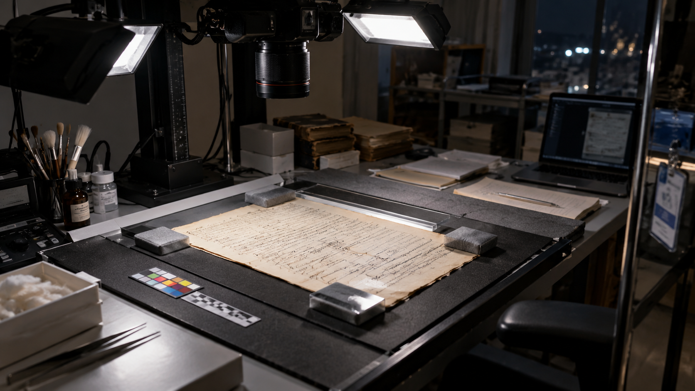
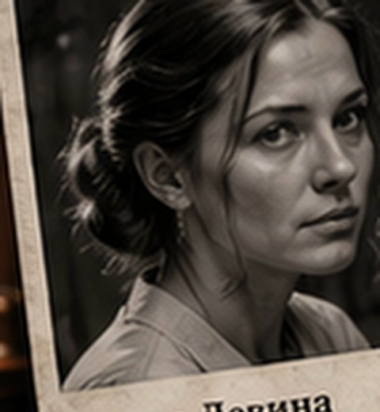
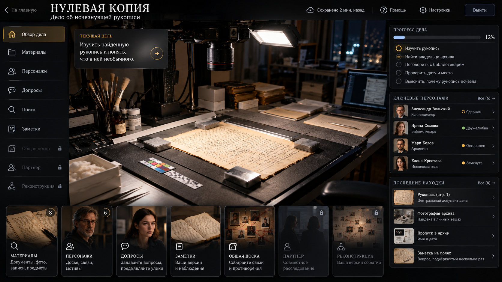

Рабочая зона
Стол реставратора
Инструменты, свет и поверхность для работы с редкими рукописями.
14 марта, 22:41. В закрытой реставрационной мастерской архива «Северный дом» Анну Левину находят без сознания. Анна — реставратор. В тот вечер она работала с редкой рукописью: рабочей тетрадью писателя Арсения Воронцова, созданной в 1832–1835 годах.
Когда Анну нашли, защитный футляр был открыт, а тетради внутри не было. Следов взлома нет. Архив уже несколько часов закрыт для посетителей. Позже Анна умирает в больнице, так и не придя в сознание.
Кто забрал тетрадь? Что произошло в мастерской? И была ли смерть Анны случайностью?
Вы расследуете дело вдвоём. Следователь получает материалы о людях, доступах и событиях вечера. Эксперт архива — документы о самой рукописи, её состоянии, реставрации и перемещениях. Обсуждайте находки и стройте общую версию: игра не выдаёт готовых вариантов ответа и не ведёт по «правильному» маршруту.
Код комнаты останется здесь до начала расследования.
Ждём второго игрока…

Изучайте документы, сопоставляйте детали, задавайте вопросы персонажам и проверяйте любые версии. Система не сообщает, что считать уликой и в каком порядке идти.

Реставратор редких рукописей. Вечером 14 марта она работала с тетрадью Воронцова; в 22:41 её нашли без сознания в мастерской. Всё остальное вам предстоит восстановить по материалам и показаниям.
Это документы, доступные вам с начала расследования. Они не отмечены как важные или второстепенные.
Эти изображения дают контекст места. Они не содержат дополнительных улик и не заменяют материалы дела.
Здесь Анна Левина работала с тетрадью Воронцова и здесь её нашли без сознания.

Инструменты, свет и поверхность для работы с редкими рукописями.
Здесь хранятся и перемещаются архивные материалы и подготовленные отправки.
Рабочая рукопись 1832–1835 годов, с которой Анна работала в вечер происшествия.
К моменту происшествия посетителей внутри уже не было. Служебная часть продолжала жить своей жизнью.
Открывайте документы и сопоставляйте факты. Игра не сообщает, какой материал окажется важным для вашей версии.
Документ появится здесь. Можно вернуться к нему позже, сопоставить с другими данными или предъявить персонажу.
Спрашивайте о событиях, отношениях, документах и своих версиях. Чтобы проверить реакцию на конкретный факт, можно предъявить найденный материал.
заместитель директора архива
Человек, документ, помещение, дата, предмет, действие, фраза или событие. Запрос может ничего не дать.
Поиск проверяет только те архивные и служебные источники, которые доступны вашей роли. «Правильной» формулировки запроса нет.
Система ничего не соединяет за вас. Записывайте факты, связи, противоречия и версии, которые считаете важными.

Выберите две карточки на доске и нажмите «Связать». Связь — это ваша версия, игра её не оценивает.
Напарник увидит запись после синхронизации.
Сохраняйте собственные версии и вопросы. Напарник их не видит.
Сформулируйте собственную версию целиком: кто, зачем и как действовал, когда и где произошли ключевые события и чем это подтверждается.
Опишите свою версию своими словами.
Укажите мотив или причины, которые, по вашей версии, объясняют действия.
Восстановите причинную цепочку, не ограничиваясь последним эпизодом.
Укажите место или места, которые необходимы вашей реконструкции.
Опишите время или последовательность времени так, как вы её восстановили.
Приведите независимые основания, на которых строится ваш вывод.
Не всякая ложь означает причастность к смерти Анны.